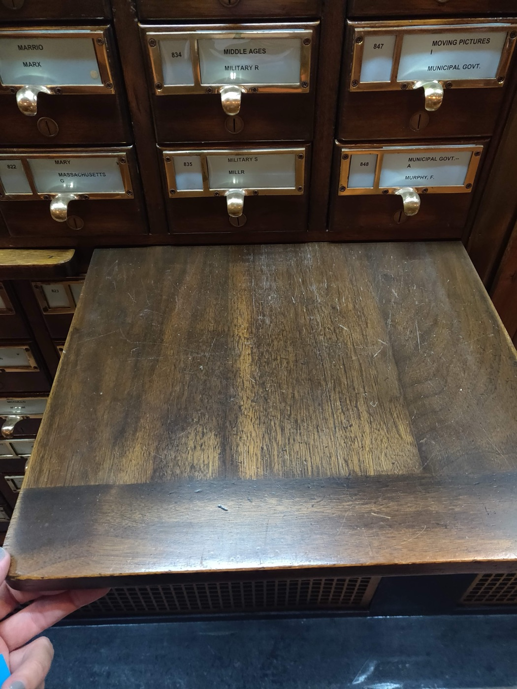

Executive Summary
A location tracker packed into a shipment of rare books stopped sending in Las Vegas. 404 Media planted it there and published what it found on August 17. The signal ended inside a facility where Amazon scans books for AI training. The facility is called VGT3, and the picture it uses for itself is a dinosaur holding a book in its claws.
What happens inside is not only scanning. People who have worked at the site say the spines of the arriving books are cut off before scanning, and no print copy survives the process. The scan data goes into training Nova, Amazon's own model. One reason print copies are worth this much lies in the year of publication. A book published before 2022 cannot contain sentences written by an LLM, and training again on AI-generated text raises the risk of model collapse.
The question this news leaves for anyone who works with data is not how to judge Amazon. Once the original is gone, what confirms which edition a given scan came from? With no print copy left to compare against, what guarantees the quality of that scan? This article follows those two questions.
Key Figures
The first two numbers point to why print copies are now treated as raw material. The last two show that collecting that raw material has already been through a courtroom and a market.
Sources: TechCrunch (2026-08-17), 404 Media (2026-07-31), Pebblous analysis of the Anthropic copyright settlement
2022
Purity baseline for the raw material
Nothing published earlier can contain sentences written by an LLM
0 copies
Reference originals left after scanning
A print copy with its spine cut off cannot be used to re-verify anything
$1.5B
Settlement on Anthropic's pirated-copy track
Lawful purchase followed by destructive scanning went the other way, as fair use
9 days
Until ISBNdb took its brokerage page down
Nine days after the report it deleted the service pitch and denied the business
Where the Tracked Book Stopped
The story began with talk among booksellers. Someone was buying rare books in bulk, not the way a collector buys but the way a list gets worked through. 404 Media chose to follow the goods on their way out rather than question the buyer. Reporters put a location tracker inside a shipment of rare books they suspected an AI company had purchased, then waited to see where the freight would stop after crossing the country.
It stopped at an Amazon facility in Las Vegas. 404 Media identifies the facility as VGT3 and writes that this is where Amazon scans books for AI training data. TechCrunch reported that the operation marks itself with a picture of a dinosaur holding a book in its claws. Amazon buying books in bulk, scanning them for AI training, and destroying them along the way had not been reported before.
One tracker proved exactly one thing: where the book went. That one thing changes the character of everything else in the argument. Most of the discussion about where training data comes from has been about web crawling, licensing deals, and online routes such as shadow libraries. This time trucks, a warehouse, and a cutting machine enter the picture. When data acquisition becomes a physical process, it gains a step that cannot be undone.
Cutting the Spine Makes the Scan Faster
The account from people who worked at the facility is simple. Cutting the spines off books that arrive in bulk turns them into loose sheets that feed faster, and print copies handled that way never return to their original form. Amazon uses the data to train Nova, its own model. The statement the company gave 404 Media was that it buys books through commercial channels to improve the products and services its customers use. That sentence speaks to whether the purchase is lawful. It is not an answer about what happens to a book after it is bought.
Why a choice about speed ends in destruction becomes visible at scale. Booksellers suspect the AI companies intend to work through essentially every book in order, by ISBN. Once filling out a list is the goal, careful handling of any single copy turns into a cost, and a process that scans while keeping the binding intact loses to throughput. The destruction is not an accident. It is a step included in the design.
What worries booksellers is not the individual sale but the inventory. When an edition with only a few copies left on the market is sold and scanned, that edition leaves circulation, and the next person looking for the same book has nowhere to buy it. Text that sat on a public shelf moves inside one company's closed model. The trade keeps working anyway, because a new basis for putting a price on print copies has appeared.
2022 as a Purity Baseline
Literary value does not explain why rare books became the target. TechCrunch lists two reasons. Print copies hold a great deal of text that does not exist online at all, and a book published before 2022 has no chance of containing sentences written by an LLM. The second condition has a name. Model collapse is what happens to performance when models are trained again on AI-generated text.
Seen this way, the publication year is not an editor's criterion but a specification for raw material. It does not ask whether a book is a good book. It asks whether the sentences in it can be guaranteed to have come only from human hands. For anything published from 2023 on, purity varies with how the author wrote, and there is no way to check that from the outside. The 2022 line is a cheap proxy that marks off a safe range while skipping the check.
The moment human-written sentences become a priced resource, the grade of that resource is set by contamination rather than by content. How synthetic data moves the price of data itself is covered separately in When AI Eats AI, Human Data Gets More Expensive.
The Ruling That Made Destruction Part of the Defense
Amazon did not invent this pipeline. The lawsuit that authors brought against Anthropic exposed an internal effort that reporting identified as Project Panama. Books were bought on the marketplace, the spines were cut off, and the pages were digitized. The process is the same one running at Amazon's Las Vegas facility.
How that effort started is on the record in the order filed on June 23, 2025. In February 2024 Anthropic hired Tom Turvey, who had led partnerships for Google's book-scanning project, and gave him the job of obtaining "all the books in the world" while avoiding as much of the "legal/practice/business slog" as possible. In the spring of 2024 he sent a few emails to major publishers asking about training licenses, but in the court's words, "Turvey let those conversations wither." He emailed book distributors and retailers about buying print copies in bulk instead. The company "spent many millions of dollars to purchase millions of print books, often in used condition." It left the route that could have led to negotiated licenses and turned toward buying and cutting.
The same record holds one item that draws less attention. "Anthropic created its own catalog of bibliographic metadata for the books it was acquiring." The object disappears and the record about the object stays. Ask later which book a given scan came from, and the answer sits inside the catalog the company built, because the book itself is gone.
In that case the court held that scanning purchased print copies and using them for training was fair use. One of the grounds matters here. It counted in the company's favor that the print original was destroyed, so no copy was multiplied or resold. Removing the original was not a side effect. It was calculated as part of the line of defense.
In the same case, the separate track of downloading and keeping pirated copies was found to be infringement, and it ended in a settlement of $1.5 billion covering roughly 480,000 works. Read the two tracks together and the message of the ruling turns over. That liability was decided by how the material was obtained rather than by what was trained on is set out in Anthropic's Copyright Settlement Draws a Legal Line on Data Acquisition.
ISBNdb Took Its Page Down
July had already shown how far the demand had spread. The website of ISBNdb, which has worked with book metadata for more than twenty years, carried a service pitch offering to source print books and sell them to AI companies. Nine days after 404 Media reported it, on July 30, the company deleted the page and posted explanations on its home page and its news page.
The company's own account is a firm denial. ISBNdb said it has never bought, scanned, or sold books, for AI training or for any other purpose, and has never trained an AI model, and that the page was a test of market interest for a service it never actually built. It added that its work is helping people find books, that it has served as the card catalog of the book world for some two decades, and that what it handles is data about books rather than books themselves.

Take the account of no transactions at face value and a fact still remains. A company that spent twenty years accumulating book metadata judged that brokering print copies was worth floating as a market test, and it took nine days for that page to register as a problem. The view of print books as raw material does not live inside one company's warehouse alone.
Two Questions Left After the Original Is Gone
That is where the reported facts end. Two things have to be asked next, and both belong to the moment after the books have already been cut.
6.1What Confirms the Lineage Later
Tracing the lineage of a training corpus means retracing which object a piece of text came from. In this pipeline the object does not survive. To confirm that a scan really came from that edition, from that print copy, there is nothing to lean on but the records the company kept. The structure in which destroying the original served as a ground for defense in the copyright case works once more here. Proving destruction lowers legal risk, and the same destruction removes what later re-verification would have examined.
The sequence visible in the Anthropic record becomes the problem at exactly this point. The bibliographic details of the purchased books stay in the company catalog and the books do not. Verifying lineage then happens entirely inside that catalog, and the party that wrote the catalog and the party that has to be audited become the same party. Libraries and archives keep digitization records together with originals in order to avoid that overlap.
In practice the difference shows up as an audit item. More organizations can now answer a question about the source of training data down to the contract and the purchase receipt, but no due-diligence list yet asks whether the object that receipt points to still exists.
6.2What Guarantees Quality With No Original to Compare
Scanning does not come out clean. Character recognition misreads letters, loose sheets overlap and pages drop out, and different editions of the same title get mixed in. This is why digitization work at libraries and archives keeps the original instead of discarding it. When something in the copy looks wrong, there has to be a reference to go back to.
Without that reference point the nature of an error changes. An error in a copy that can be compared is waiting to be corrected. An error in a copy with nothing to compare against becomes the fact. A model trained on that text can inherit a misread sentence, and there is no place left to check where it went wrong. Print copies were gathered to protect purity, and the means of verifying accuracy went away with them.
Editor's Note: This is the kind of item Pebblous has in mind when it says the accuracy of a value is not the only thing AI-Ready Data has to account for. Where the data came from, whether that source can still be opened today, and what stands in for it when it cannot, all have to be written into the record for anyone to examine later. The more acquisition methods erase the original, the more the verification record kept at acquisition time is worth.
References
Reporting
- 1.Maiberg, E. (2026). "We Tracked a Shipment of Rare Books. It Ended at an Amazon AI Training Facility." 404 Media. — Original investigation tracking a rare-book shipment to Amazon's VGT3 facility.
- 2.Silberling, A. (2026). "Amazon, once an online bookseller, is destroying rare books to train AI models." TechCrunch. — Names VGT3, Amazon's official statement, and the pre-2022 / model collapse link.
- 3.Cole, S. (2026). "Company Offering Printed Books to Train AI Stops After 404 Media Coverage." 404 Media. — Follow-up on ISBNdb pulling its brokerage page.
Court Record
- 4.Bartz v. Anthropic PBC, No. 3:24-cv-05417-WHA (N.D. Cal.), Doc. 231 (2025-06-23). — Order detailing Project Panama's book acquisition and destructive scanning, and treating original-destruction as grounds for fair use.